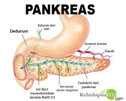

Pangkreas

Kelenjar pankreas adalah sebuah alat yang panjang melintang pada dinding belakang perut dan berjalan ke kiri sampai pada limpa. Perhatikan gambar 5.10. Ujungnya terletak dalam lengkung usus dua belas jari. Saluran pankreas bermuara di dalam usus dua belas jari bersama dengan saluran empedu. Sebagian jaringan pada pankreas dapat mengeluarkan getahnya yaitu insulin. Insulin akan dicurahkan langsung ke dalam darah. Karena itu, maka pankreas disebut juga kelenjar buntu. Bubur makanan yang keluar dari lambung dan masuk ke dalam usus halus bercampur dengan empedu dan getah pankreas sehingga pencernaan makanan berlangsung terus. Bubur makanan itu disiapkan untuk diserap zat-zat makanannya oleh dinding usus. Penyerapan ini juga terjadi pada usus halus lainnya, yang terletak berliku-liku dalam rongga perut bagian bawah.
Peran kelenjar pankreas dalam pencernaan adalah menghasilkan getah pankreas. Getah pankreas dialirkan ke dalam saluran pencernaan pada duodenum melalui ductus coledochus bersama cairan empedu. Getah pankreas mengandung lipase, garam karbonat, dan tripsinogen.
Lipase adalah enzim yang digunakan untuk memecah lemak menjadi asam lemak dan gliserol. Tripsinogen adalah enzim yang belum aktif, jika sudah aktif akan menjadi tripsin dan berperan mencerna protein secara kimiawi. Garam karbonat berperan dalam pencernaan lemak.